UDN
Search public documentation:
BrushClipping
Interested in the Unreal Engine?
Visit the Unreal Technology site.
Looking for jobs and company info?
Check out the Epic games site.
Questions about support via UDN?
Contact the UDN Staff
Two- and Three-Point Brush Clipping
Document Summary: A reference for the Brush Clipping tool. Document Changelog: Last updated by Vito Miliano (UdnStaff), for whatever reason. Original author was Warren Marshall (EpicGames).Overview
Brush clipping is the term used to describe the operation of cutting a brush with a plane. This is a powerful tool when properly understood, and should become a staple in any level designers toolbox. Here's a quick example of a simple clip.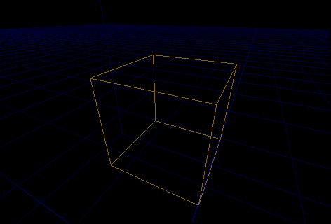
Here's a simple subtracted cube, before any clipping is done to it.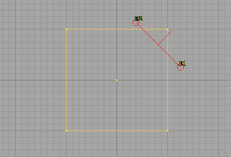
In the "Top" 2D viewport, we place 2 clipping points which define the clipping plane.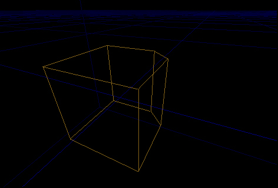
The resulting brush after the clip is performed. The first thing to understand is how to place the clipping points and what the various markers and symbols mean. To do that, let's run through a simple clip, step by step ...2 Point Clipping
The first thing to understand are the clipping points. Clipping points define the clipping plane. If you only place 2 points, the third point will be inferred from the viewport you do the clip from. If you add a third point, the plane is defined by the points themselves. In either case, the plane used in the end has 3 points. The clipping points look like little push pins with numbers attached to them. The numbers will help you visualize the planes orientation. The clipping plane will clip (remove) whatever is in front of it. The front of the plane is defined by the order that the clipping points appear in. This will become intuitive after you do a few clips of your own, so don't worry if this isn't clear right now. For this example, we'll use the "Top" viewport. To place clipping points, you go into brush clipping mode, designated by this button: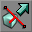
. Once you are in this mode, you can place clipping points. You do this by holding down the CTRL key and right clicking where you want the point to go. You can do this in any of the 2D viewports. Let's go back to our original cube at the top of the article and walk through the steps of how to do that simple clip. First, create a cube brush and subtract it from the world. Now, go into brush clipping mode. In this mode the cursor changes when you are over a viewport to indicate you're in the mode. Select the brush so that it's highlighted. In the "Top" viewport, hold down CTRL and right click to place a clipping point so that it looks like this...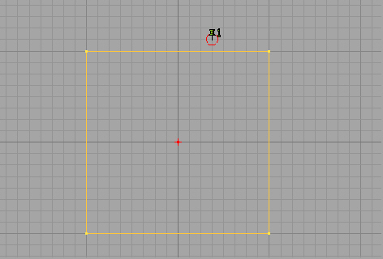
Now, do the same thing to place a second point. Do it so you end up with something that looks like this (it doesn't have to be exact)...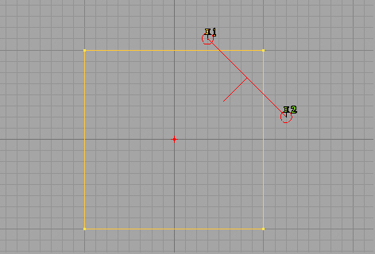
OK, now at this point, you have all you need to do a clip. Since you are in the 2D viewport, the third point has been implied by the editor, and it's showing you the clipping plane it's going to use. The plane is indicated by the red line connecting the 2 points. The red line that is perpendicular to the connecting line is indicating the direction the plane is facing. The important thing to remember here is that whatever that line is pointing at, is the part of the brush which will be clipped away. Now as luck would have it, this plane is backwards. We want to clip off the corner, not the body of the brush. So we need to flip the clipping plane. This is done by clicking this button: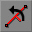
. Do this now, and you should have something that looks like this ...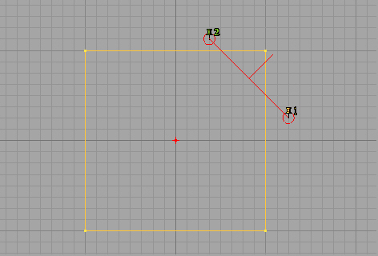
The 2 clipping markers have traded places, which causes the plane to flip over. Now things are looking good, so let's do the clip. Click the clip button :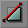
. You should see something like this ...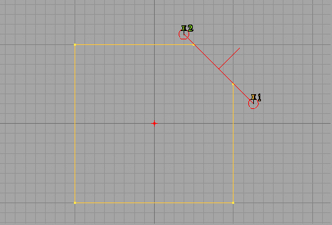
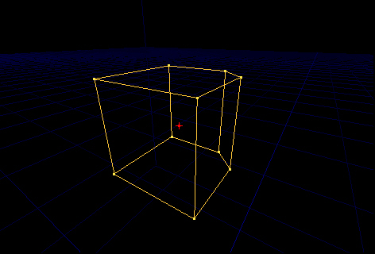
Now the brush has been clipped the way we wanted. After a clip is performed the editor will leave the clipping markers where they were in case you want to work with those same points some more (you do sometimes... we'll cover that in the advanced section). For now, we're done clipping, so let's delete these points. You can do that by clicking this button: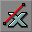
. Once you do that, you should see this...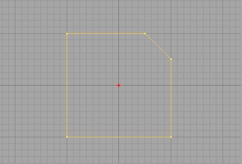
And that's all there is to it. That wasn't so bad was it? This operation can be done in any of the 2D viewports, we just used the "Top" viewport because it's the easiest one in which to visualize what's happening. Something else to remember is that a brush has to be selected before it can be clipped. You can place the markers with the brush unselected, but if you click the clip button with no brushes selected, nothing will happen. You can also select multiple brushes and have all those brushes clipped at once.3 Point Clipping
OK, let's keep going with that same brush. Let's clip it again, but this time we'll use a 3rd point and define the entire clipping plane ourselves. Start out like before, adding 2 points. Get something that looks like this ...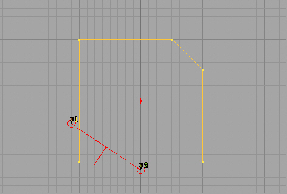
Now, add a third point ... something like this ...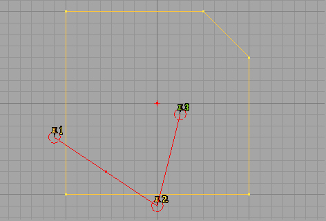
You'll notice that the perpendicular line has vanished. Well, it hasn't actually vanished, rather it's pointing straight at us since all the clipping points are on the same plane. Let's use the 3D window for the rest of this exercise. You should see this in the 3D window ...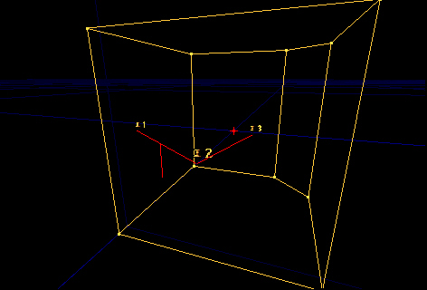
There's the line, pointing straight down. Now, you can play with the orientation of the plane in 3D by moving the clipping markers around. The markers behave just like regular actors, so move them around like you normally move actors. Play with them a bit and you'll see how it works. Try to set up something like this before proceeding ...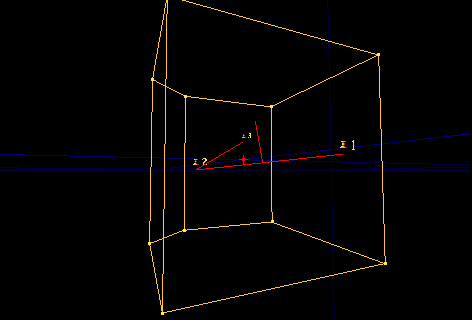
It doesn't matter if you get this exactly or not ... just get the plane so that it's not laying flat. Now, click the clip button. You notice that clip lies exactly along the plane you defined ...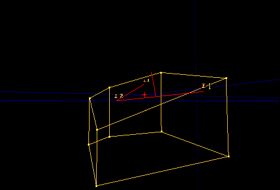
Move the camera around and you'll see the relationship between the clipping plane and the clip we performed. Now, click the undo button on the toolbar. We'll take a quick look at the split function. Once you have your original shape back again, click the split button: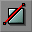
This breaks the brush in 2 pieces, along the clipping plane. You'll have something like this ...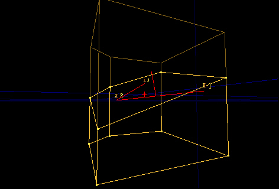
Now there are 2 pieces instead of one. I'll move the pieces apart so you can see them better.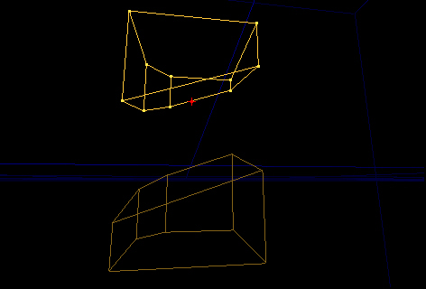
NOTE : you can do brush clipping against the active brush (the red one), but you can't do splits. There can only be one active brush, so splitting it is not allowed. If you try this, it will just do a normal clip.Advanced Trick #1
Earlier I mentioned that you can perform multiple clips against the same brush. One thing you can do with this is use the clipping plane like a table saw, and put a nice curve on a brush. What you want to do is set up the following ...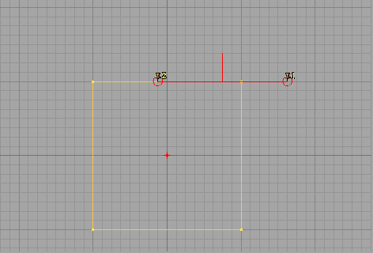
Now, go back into regular camera mode. The clipping points stay where they were. What you want to do, is rotate the brush a step, clip it .. rotate another step, clip it ... etc. Until you rotate a full 90 degrees. This is what it looks like after the first step.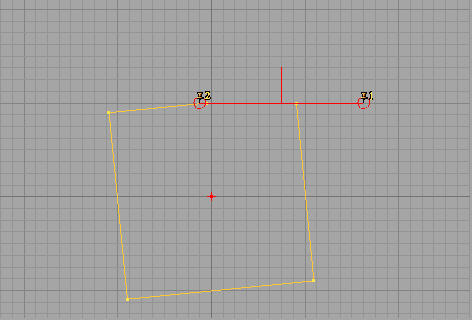
And this is the finished product after it's been rotated 90 degrees.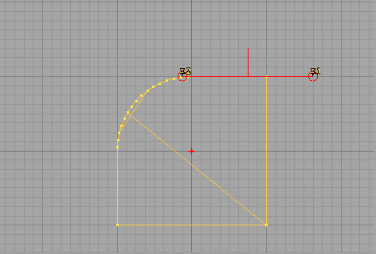
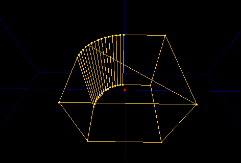
As you can see, you can get a very smooth, uniform curve this way. This shows one of the more powerful things you can do with the brush clipper.